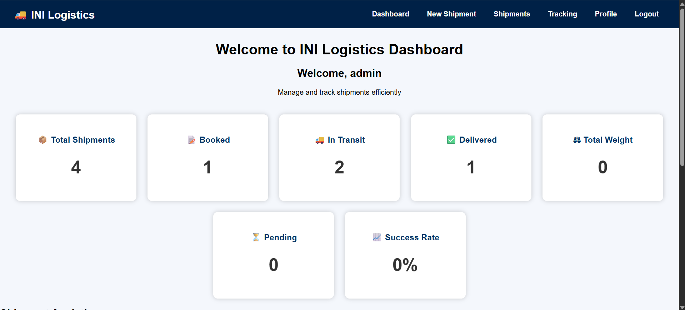
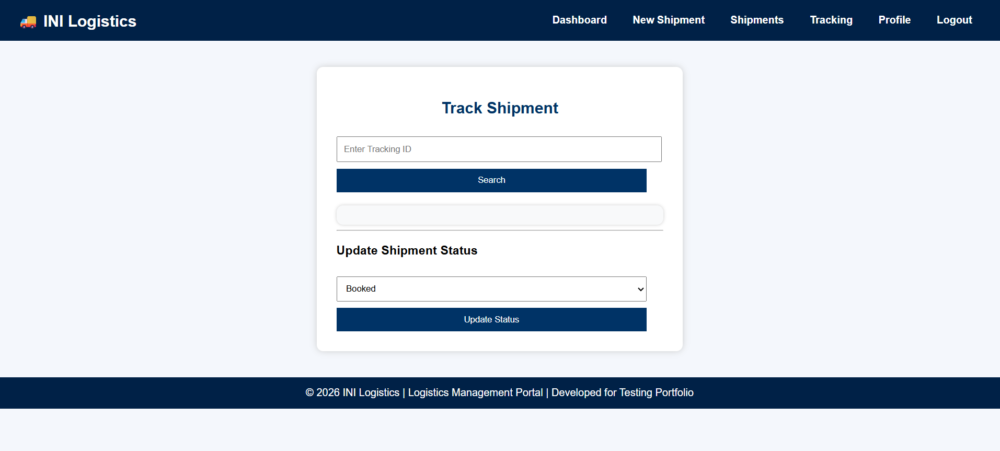
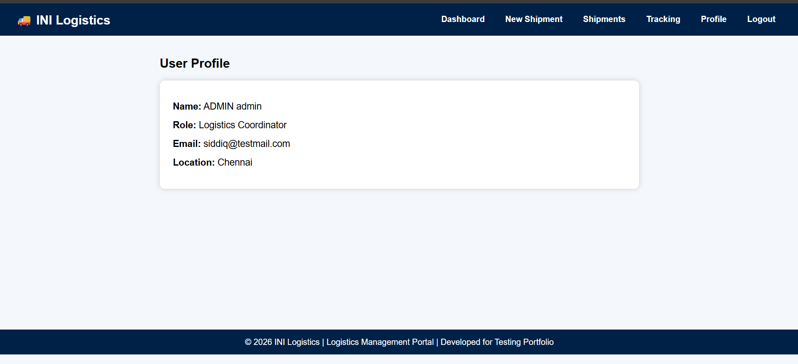

Software Test Engineer specializing in Manual Testing, Selenium Automation, API Testing, SQL Validation, and Defect Management.
Detail-oriented and passionate Software Tester with hands-on experience in Manual Testing, Test Case Design, and Defect Tracking.
Strong understanding of SDLC, STLC, and Agile methodologies, with practical exposure to real-time testing projects, including INI Logistics: a demo webpage created for Automation Testing using Selenium tool, OrangeHRM Recruitment Module and Demoblaze E-commerce application.
Skilled in:
• Test Case Design & Execution
• Functional, Regression & Smoke Testing
• Defect Tracking using JIRA
• Requirement Traceability Matrix (RTM)
I bring 10+ years of professional experience in operations, customer handling, and problem-solving, which strengthens my analytical thinking and attention to detail in software testing. Currently enhancing my skills in Selenium Automation and API Testing (Postman). I am actively seeking opportunities as a Software Tester / QA Engineer where I can contribute to delivering high-quality, bug-free applications.
Projects
Test Cases
Years Professional Experience
Mechanical Engineering Graduate
Operations & Customer Service Professional
Started Software Testing Transition
Built QA Projects & Portfolio
Manual Testing
Selenium
API Testing
SQL
Seva Rathna Vallal RCK College of Engineering, Thiruvallur
Year of Graduation: 2015
End-to-end testing project including Test Planning, Test Case Design, Bug Reporting, and Selenium Automation.
Developed and tested a Logistics Management Portal using HTML, CSS, JavaScript, Git, and GitHub Pages.
Key Contributions:
• Designed and executed 50+ manual test cases.
• Prepared Test Plan and Test Summary Report.
• Documented defects using structured Bug Reports.
• Created Selenium automation scripts for critical workflows.
• Performed Functional, Smoke, Regression, and UI Testing.
• Published the application and QA artifacts on GitHub.
Key Features:
• User Login
• Shipment Creation
• Shipment Tracking
• Dashboard Analytics
• Profile Management
• Local Storage Integration
Testing Activities:
• Test Scenarios
• Test Cases
• Bug Reporting
• Selenium Automation Scripts



Test Cases
Bugs Logged
Selenium Scripts
Created 50+ test cases and scenarios
Tested candidate management workflows
Performed Functional & Regression Testing
Logged defects in JIRA and tracked lifecycle
Created RTM for requirement coverage
Skills: Manual Testing, Software Testing, +4 skills
Tested Login, Cart, and Order modules
Executed Smoke & Regression Testing
Reported bugs and documented results
Practiced Selenium scripts for automation basics
Skills: Software Testing Life Cycle (STLC), Test Execution, +6 skills
Created a responsive personal portfolio website using HTML, CSS and JavaScript and deployed on GitHub.
View Source CodeActively seeking Software Tester, QA Engineer, and Test Automation roles.
Download ResumeTest Cases
Bugs Logged
Selenium Scripts